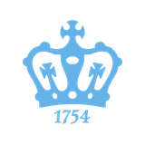

About
I'm finishing my M.S. in Business Analytics at Columbia University (December 2026) and looking for a research assistant position in clinical risk prediction, LLM evaluation in medicine, or biostatistics, starting January 2027.
Most of my research so far comes from one question: when should a clinician trust a model? In my capstone at Columbia University Irving Medical Center, I built center-specific surgical risk models for high-risk neonates with congenital heart disease, where national registry scores work least well. Along the way I found that a single LLM used for chart abstraction quietly pulled rare anatomies toward common diagnoses, and I replaced it with a multi-LLM consensus that sends the hard cases to clinicians. At Meituan I ran into the same problem from the other side: an LLM judge that rewarded confident prose even when the numbers were wrong.
I care about calibration and uncertainty as much as discrimination, about evaluation designs that reflect how a model will actually be used, and about randomized experiments as the final test of whether a tool changes decisions. I work in Python, R, and SQL. The best way to reach me is by email.
Research
-
Jan – May 2026
Clinical AI for Surgical Risk in Neonatal Congenital Heart Disease · Research Capstone, Columbia University Irving Medical CenterNew York · Advisor: Nimrod Goldshtrom, MD, MS
- Center-specific risk model. National STS and PC4 scores are least reliable for the highest-risk neonates. I framed mortality and length-of-stay prediction on a 20-year cohort of 1,500+ neonatal cardiac surgeries, used temporal validation to account for practice drift, and kept penalized logistic regression as the primary model after gradient boosting's advantage failed to hold across eras.
- Multi-LLM chart abstraction. Checking LLM-extracted STS codes against clinician abstraction showed that a single model pulled rare anatomies toward common diagnoses and changed its answer when a note was reordered. A cross-family LLM panel with evidence quoting and retrieved code definitions fixed most of this; because the models' errors were correlated on the rarest codes, those are always routed to clinician review.
- Uncertainty-aware reporting. Each prediction comes with a conformal interval, its main drivers, and the number of comparable past cases, so clinicians can see when the model is extrapolating. The tool was built for the hospital's weekly multidisciplinary case conference.
-
May – Aug 2026
Evaluating LLM Agents for Automated Analytical Reporting · AI Analytics Intern, MeituanBeijing
- Stage-level evaluation. End-to-end checks could not say which step of an agent pipeline had failed, so I scored SQL correctness, extraction completeness, cross-source stitching, and metric consistency separately. Tracing showed many errors came from metrics defined differently across sources; a shared metric dictionary cut recurring report errors by 24.5%.
- Auditing the LLM judge. Calibrating the judge against human labels showed it favored fluent, confident reports even when the numbers were wrong. I moved numeric checks to code, limited the judge to a fixed rubric, and kept a rotating human audit sample.
- Packaged stable workflows into reusable agent skills used across teams, saving about 10 hours of analysis a week.
-
Mar – Jul 2024
Domain-Adapted Language Models for Retail Investor Sentiment · Research Assistant, Capital University of Economics and BusinessBeijing
- General sentiment models misread sarcasm and slang in retail investor posts. I scraped a year of comments from Eastmoney Guba, fine-tuned FinBERT, and compared it with the off-the-shelf model and zero-shot LLM classification; after revising the labeling guideline through disagreement review, the adapted model was more accurate and more consistent on informal text.
Experience
-
Oct 2026 – Now

Course Assistant · Columbia University, IEORNew York · IEOR E4735
- Support graduate students in quantitative pricing and risk analysis through office hours, grading, and review of modeling exercises.
-
Nov – Dec 2024
Data Analysis Intern · Tencent VideoBeijing
- Traced viewing funnels for 12.1M users and found the largest drop-off right after the first video ends.
- Designed a randomized A/B test of the recommendation flow with a pre-specified primary metric, guardrails, and a power analysis; next-video play rate rose 4.5%.
-
Jan – Mar 2024
Data Analysis Intern · Beijing Xinshichuangyu TechnologyBeijing · Mobile games
- Built retention datasets from 300K+ player records and 2 GB+ of gameplay logs, then ran an A/B test on the event entry flow that raised participation 18%.
-
Jul – Aug 2023
Integrity & Compliance Intern · EYBeijing
- Automated reconciliation of physician engagement and reimbursement records with rule-based validation in Python, validating 150+ records a day.
Education & skills
Columbia University
M.S. in Business Analytics (STEM), Columbia Business School and Columbia Engineering
Capital University of Economics and Business
B.Mgt. in Information Management and Information Systems
- Statistics
- Penalized regression, calibration and decision curve analysis, conformal prediction, missing-data imputation, gradient boosting, SHAP
- Experiments
- Randomized A/B testing, power analysis, guardrail metrics
- LLMs
- LLM bias evaluation, multi-LLM consensus, LLM-as-a-judge, agent evaluation, fine-tuning (Hugging Face), RAG, MCP
- Clinical data
- REDCap, de-identified registry data, diagnosis and procedure coding, temporal validation
- Languages
- Python (PyTorch, scikit-learn, statsmodels, pandas), R, SQL